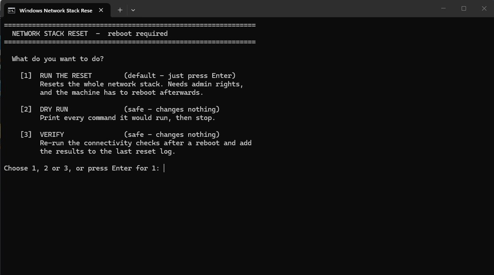
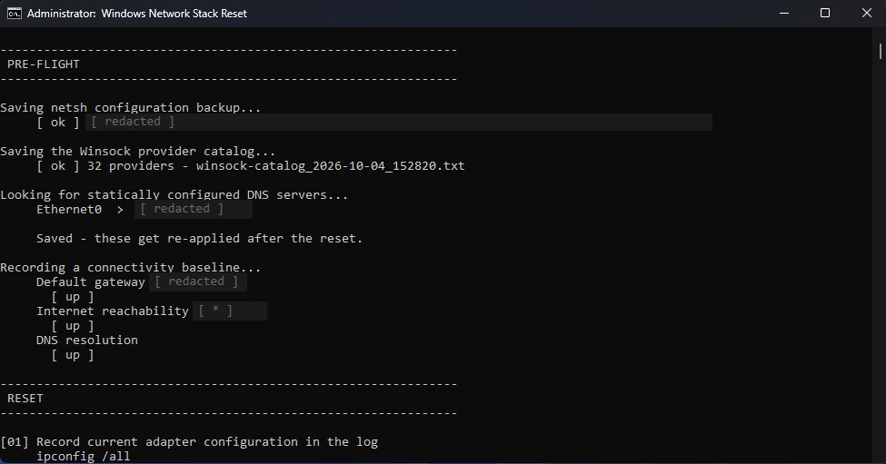
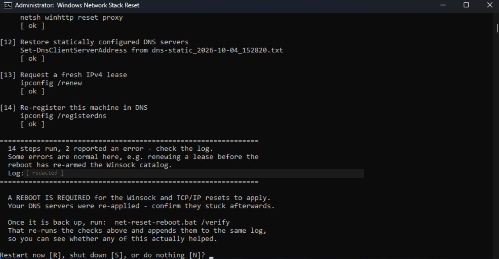
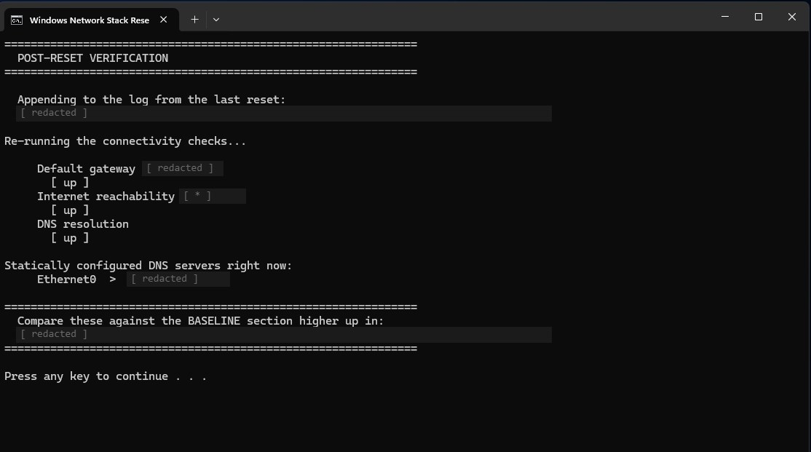

Network Stack Reset
net-reset-reboot.bat
Batch · PowerShell · netsh · Windows Networking
Status: [ ACTIVE ]
Network Stack Reset is the heavy option for when Windows networking is truly broken. It resets TCP/IP, IPv6, Winsock and proxy settings, then reboots.
Before it changes anything it backs up the netsh configuration, the Winsock provider list and any hand-set DNS servers, and it restores those DNS servers after the reset. Gateway, internet and DNS tests run before the reset, and a verify mode repeats them after the reboot, all in the same log.
Key Features
- Full reset of TCP/IP, IPv6, Winsock and proxy settings
- Backs up netsh config, Winsock providers and manual DNS, then restores the DNS servers
- Gateway, internet and DNS tests before the reset; verify mode after the reboot
- Menu with reset, dry run and verify modes
- Optional firewall reset
- Choice of restart, shutdown or neither when finished
- Numbered, logged steps with pass/fail results
- Cancellable 15-second countdown before the restart
- Refuses to run over Remote Desktop unless forced, since it would cut the session
What This Project Demonstrates
- Practical Windows network troubleshooting
- Backup-before-change discipline
- Clear, step-by-step logging with pass/fail results
- Thinking through how a tool can lock its own user out
Notes
The script is published on GitHub with its full documentation. For lighter problems, Network Refresh clears caches and renews DHCP without a reboot.
Screenshots



